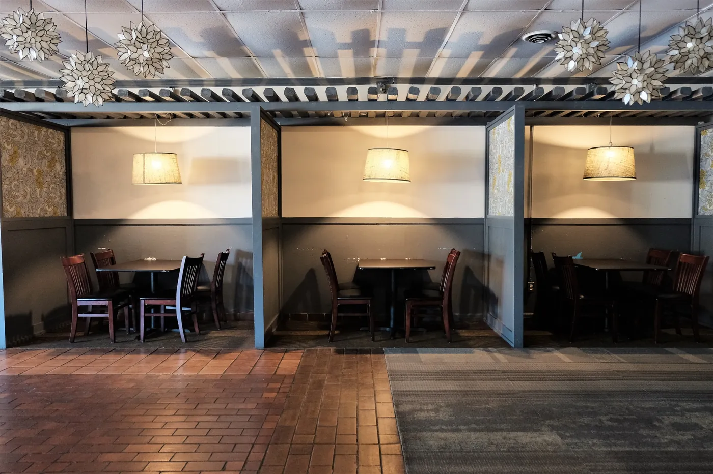
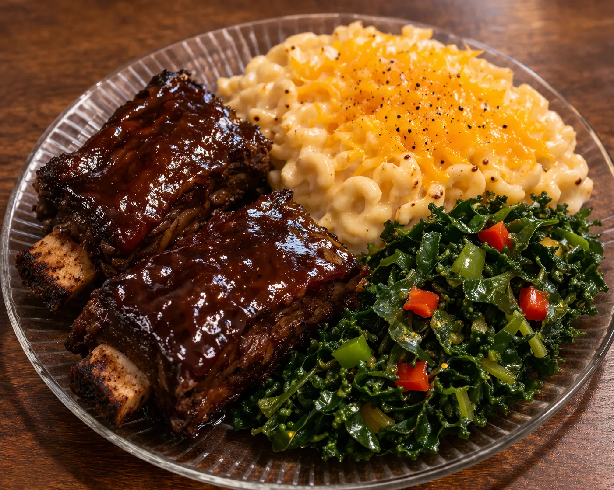

From the Neighborhood · Since 2018
Reviving soul food, the healthy halal way
Springreens is East Atlanta's home for healthy halal soul food — a place where families, elders and children gather around fresh, flavorful, wholesome plates.
Our story
A go-to destination for halal healthy soul food
Springreens, located in the heart of Atlanta at 566 Fayetteville Rd SE, is your go-to destination for halal healthy soul food with a twist. Since 2018, we've been committed to reviving the soul food tradition — focusing on nutritious ingredients everyone can enjoy.
Whether you're vegan, vegetarian, or a soul food enthusiast, our menu offers a variety of flavorful dishes prepared with vegetables and wholesome ingredients, ensuring a satisfying experience every time. Our menu combines the best of classic soul food with healthy options that nourish the body without compromising on flavor.
Popular dishes include our signature Southern-style greens, savory mac & cheese, and our ever-popular cornbread that melts in your mouth. We also offer a variety of vegan options — because there should be something for everyone at the table.
What we stand for
Fresh. Halal. Made with love.
100% Halal
Every protein we serve is halal — no exceptions, no compromises.
Wild-Caught Seafood
Responsibly caught whiting and flounder, prepared fresh daily.
Vegan-Friendly
Our vegetables are made without meat — wholesome plates for everyone.
Community-Rooted
A clean, respectful, family-friendly table for the whole neighborhood.

Community Café · East AtlantaA note to our guests
A welcoming place for families
Springreens is a place where families, elders and children gather. We strive to maintain a clean, respectful and welcoming atmosphere for everyone — and we're grateful for a community that helps us keep it that way.
You'll find us inside Community Café, sharing a home with our herbal-tea partner Jadiya Ché. Come dine in, take out, or order ahead — there's always a warm plate waiting.
From the Neighborhood
What our guests say
“Sweet chili chicken wings, a large slice of bean pie, and the peach-lavender lemonade bring me back to Springreens each and every Wednesday.”
“The vegetables here are seasoned to perfection. There's really no comparison to other soul food in Atlanta — Springreens is in a class of its own. Natural ingredients, and the food has a fresh taste to it.”
“When I have out-of-town guests, I bring them to Springreens. I also eat here when I'm by myself because the food is fresh and made with love.”

Come taste the difference
Order online, plan a visit, or let us cater your next gathering.